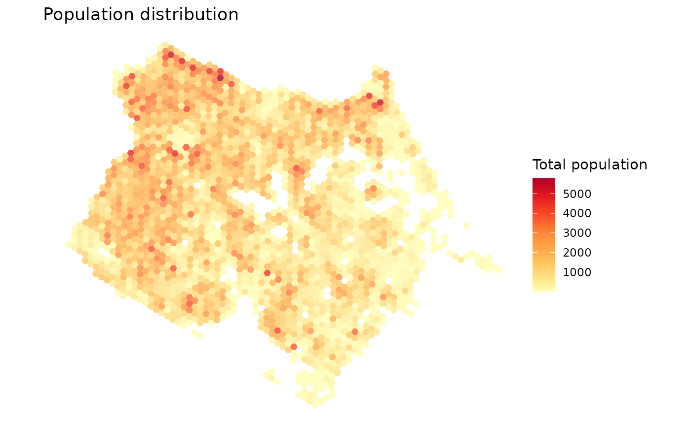
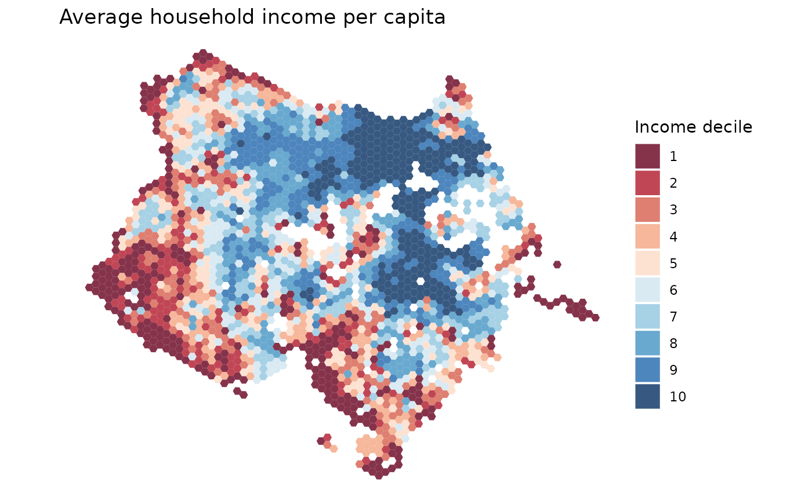
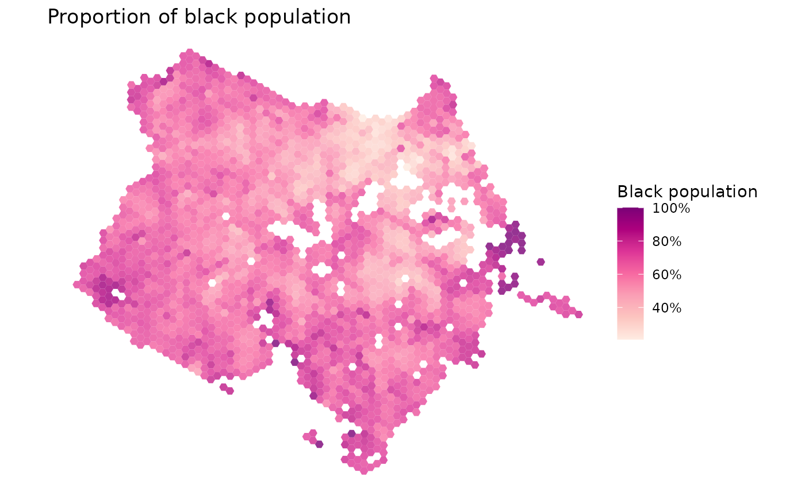

Here are a few quick examples to illustrate how you can use the {aopdata} package to map the spatial distribution of population in Brazilian cities.
Download population data
df <- aopdata::read_population(
city = 'Fortaleza',
year = 2010,
geometry = TRUE,
showProgress = FALSE
)
#> Downloading population data for the year 2010Map total population
ggplot() +
geom_sf(data=subset(df, P001>0), aes(fill=P001), color=NA, alpha=.8) +
scale_fill_distiller(palette = "YlOrRd", direction = 1)+
labs(title='Population distribution', fill="Total population") +
theme_void()
Map population by income levels
Here, we map the spatial distribution population by income decile
(column R003).
ggplot() +
geom_sf(data=subset(df, !is.na(R002)), aes(fill=factor(R003)), color=NA, alpha=.8) +
scale_fill_brewer(palette = "RdBu") +
labs(title='Average household income per capita', fill="Income decile") +
theme_void()
Map population by race
Here, we map the spatial distribution of the black population.
df$prop_black <- df$P003 / df$P001
ggplot() +
geom_sf(data=subset(df, P001 >0), aes(fill=prop_black), color=NA, alpha=.8) +
scale_fill_distiller(palette = "RdPu", direction = 1, labels = percent)+
labs(title='Proportion of black population', fill="Black population") +
theme_void()